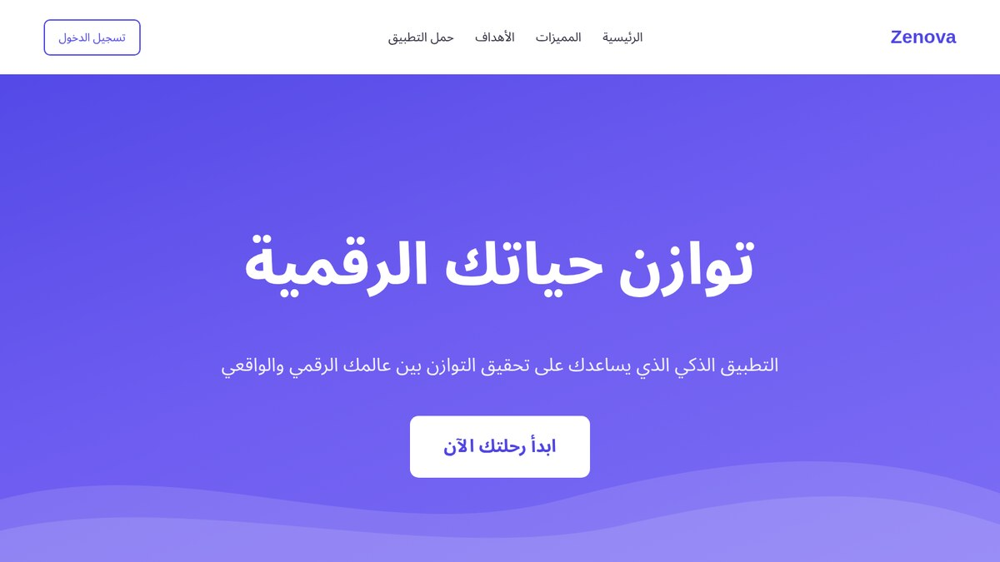

Heart Disease
Risk Analysis
Cleaned and explored more than 319K CDC BRFSS records, designed a normalized SQL Server database and built a six page Power BI dashboard.
VIEW PROJECT ↗INFORMATION, MADE USEFUL.
I clean, query and shape data into dashboards people can use. I am a Computer Science student at Mansoura University and a DEPI trained data analyst.
Make data feel
less intimidating.
Data analysis, dashboards and business research.
Cleaned and explored more than 319K CDC BRFSS records, designed a normalized SQL Server database and built a six page Power BI dashboard.
VIEW PROJECT ↗Business research for an AI powered academic research platform, including audience research, user personas, a business model and market sizing.
VIEW PROJECT ↗ ↗
↗
↗A team concept for a mobile app to help kids and parents manage screen time. My contribution focused on research and the final presentation.
VIEW PROJECT ↗From raw data to a useful answer, with the people reading it in mind.
I enjoy following a question from its source data to an answer people can act on. My work brings together technical analysis, business research and clear communication.
Training and study alongside collaborative projects.
Digital Egypt Pioneers Initiative (DEPI) / MCIT Egypt
Mansoura University
I am open to remote roles where I can keep learning and contribute to useful work.